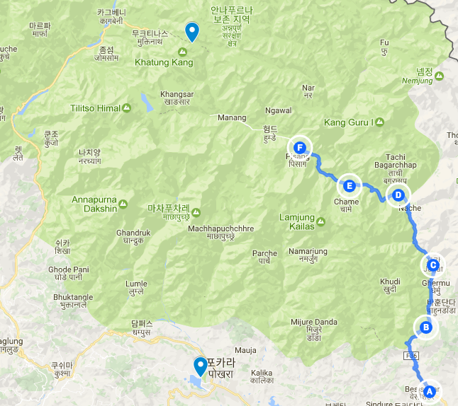

앞만보고 걷다가는 멋진 기회를 놓친다
2017년 04월 16일
여행 D+13, 안나푸르나 D+5
오늘 이동한 경로 (E) -> (F) (총 18.5km + 8km)
Chame(2710) -> Lower Pisang(3250) -> Upper Pisang(3310) -> Lower Pisang(3250)

앞만보고 걷다가는 멋진 기회를 놓친다
새벽에 소변이 마려워서 깼다. 추운 밤 침낭속에서 완전한 상태로 있는데 새벽에 화장실에 가기 너무 힘들다 참고 자기로 했다가 결국 한 한시간 동안 못잔것 같다. 3시반에 화장실에 가서 소변을 봤다. 그리고 6시까지 푹잤다. 내일부터 자기전에 물을 싹 빼고 자야겠다.
한국인같이 생긴사람을 봤다. 그런데 하이 라고 하기도 민망하고 한국인이냐고 물어보기도 민망해서 그냥 지나쳤다. 외국인들에게는 쉽게 인사할수 있겠는데 의외로 한국인같이 생긴사람에게 인사하기가 쉽지 않다. 일단 무슨말로 인사할지부터 햇갈려서 그런것 같다. 그래서 앞으로 한국인같이 생긴사람을 만나면 먼저 혹시 한국인이세요? 라고 한국말로 물어보기로 했다. 만약 그 사람이 이해를 못하면 I am sorry. I just think you are korean. 라고 말하기로 했다.
걷고 또 걷다보면 힘이들어 앞만보게 된다. 혹은 땅만 보고 걷게 된다. 우연히 뒤를 돌아봤는데 엄청 멋진 장면이 뒤에 있었다. 거대한 설산이 있었다. 앞만보고 걷다간 뒤에 있는 장관을 놓치게 된다. 이것이 자주 주위를 잘 둘러봐야하는 이유다. 앞만보고 가면 이 여행을 충분히 즐길 수 없다.

걷다가 순간 생각의 단상이 떠오르면 바로 폰을 켜고 짧막하게 적는다. 안그러면 까먹기 때문이다. 기억은 기록으로 완성된다. 걸으면서 혹은 여행중에 하는 하는 수많은 생각들 그냥 잊어버리기에는 아깝다. 13kg의 짐을 메고 걷다가 잠시 멈춰서 핸드폰을 꺼내 생각을 기록하면 그 흐름이 엄청나게 깨져서 걸음을 방해한다. 하지만 기록을 멈추면 안된다. 이 여행이 끝난뒤에 만들어지는 것은 기억이다. 나는 그 기억을 만들기 위해 여행하는것인지도 모른다. 그 기억을 보다 풍성하게 하기 위해서는 일부의 희생이 있더라도 기록을 멈출 수 없다.
오늘 코스는 초반에 경사가 무척심했다. 지나고 보니 어떻게 걸었는지 모르겠다. 오늘 거의 700m를 올라갔다. 올라가다가 패트릭과 타쿠어를 놓쳤다. 더 올라가다가 잠시 짧은 길로 올라가서 쉬었는데 그때 이들을 놓쳤다. 너무 힘들어서 거의 20분을 쉬었다. 또 너무 오래쉬면 긴장이 풀려버리기 때문에 출발해야한다. 이제는 혼자 가야한다. 혼자가면 장점은 내 페이스를 유지할 수 있다는 것이다. 힘들면 잠시 멈췄다가 가도 된다. 근데 같이가면 어떻게든 가게된다 좀더 빨리 가게되긴한다. 그런데 너무 힘든것이 단점이다. 어쨋든 해어진것이 이제 혼자 안나푸르나를 돌아도 좋다고 생각했다.
거의 한시간을 넘게 걸어서 디쿠르 포카라에 도착했다. 점심을 먹을 식당을 찾았다. 그런데 누가 않아서 손을 크게 흔들었다. 패트릭이었다. 결국 다시만났다. 이곳에서는 코스가 같고 하루하루 목적지도 거의 비슷하기 때문에 자주 마주치기 쉽다. 한 20~30 명정도가 같은 시점에 비슷한 코스를 가고 있는것같은데 얼굴은 거의 기억할수 있다. 한명한명씩 인사해보는것도 좋을것 같다.
아까 만났던 동양인에게 한국말로 물어봤다. 그랬더니 갸우뚱한다. 결국 중국인으로 밝혀졌다.. 상당히 한국인 처럼 생긴 중국인이었다. 그리고 햇빛을 싫어하는것도 마찬가지. 이름은 chen zuo 이다. 영어를 잘 못한다고 해서 깊이있는 대화를 하지는 못했다. 이 친구는 아무한테도 인사를 하지 않고 혼자 가이드와 같이 걷고 있다. 영어를 못해도 인사정도는 해야 이 트레킹 길이 재미있을 텐데 아쉽다. 아무튼 한명한명 알아가는 재미가 있다. 같은 동양인을 만나서 더욱 반가웠다. 서로 대화가 잘앙되어도 즐겁게 인사했다
드디어 목적지인 로우 피상에 도착했다. 머리가 살짝 띵한데 고산병 증상 인건지 잘 모르겠다. 롯지에 도착했는데 엄청 졸리다. 피곤해서 졸린건지 산소부족으로 졸린건지 모르겠다. 근데 왠지 자면 안될것 같다. 어디서 얼핏 자지 말라고 읽었던것 같다. 이곳은 3258미터 고지에 있다. 이제 곧 고산 지대에 들어갈텐데 긴장된다. 고산병 분명 겪게 될것이다. 잘 버틸 수 있을까.
바로 옆 마을인 어퍼피상에 잠시 올라갔다오기로 했다. 고산병 적응 연습이기도 하고 경치가 멋있기 때문이다. 올라갔더니 안나푸르나 3번 피크가 바로앞에 있었는데 정말 장관이었다. 코앞에 산이 있는것 같은데 저게 8000미터 높이라니..
안나푸르나에서 3번째로 높은 봉우리. 오늘 본 최고의 장면이었다.
샤워하기가 두려웠다. 그래도 마지막이라고 생각하고 온수샤워를 했다. 더 높은 고산으로 가게되면 어차피 샤워를 하지 못한다고 한다. 샤워를 하면 고산병 증세에도 않좋다고 들어서 가이드인 타쿠어에게 말했더니 누가 그러냐고한다. 샤워하는것 괜찮다고 한다. 근데 생각해보니 나도 4년전에 볼리비아 라파즈(4000m) 에서 고산병을 경험했는데 다음날 찬물로 샤워하고 낫긴햇었다. 뭐가 맞는건지 잘 모르겠다. 이론상 찬물이 닿으면 혈관이 얇아지니 않좋을것 같은데 말이다.
오늘 거의 4리터의 물을 마셨다. 고산병이 우려되서다. 물 값은 아끼지말고 펑펑 마셔야 겠다. 하루 거의 5리터씩 마시자.
패트릭이 책한권을 끝내고 두번째 책을 가져왔는데 제목은 안드로이드는 전기양을 꿈꾸는가?(필릭 K 딕) 이다. 나도 이 소설을 잘 알고 있었다. 리들리스콧의 영화 블레이드 러너의 원작소설이다. 내가 잘 알고있는 소설을 이 외국놈이 읽고 있으니 반가웠다. 공통의 관심사가 있으니 대화하기도 수월하다. 나는 소설을 많이 읽지는 않지만 SF소설에 관심은 많다. 그래서 이 친구가 읽고 있는 작가와 소설에 대한 정보를 꽤 많이 알고있어서 즐거운 대화를 할 수 있었다. 어제 내가 아이작 아시모프의 The last Question이라는 짧은 단편 소설을 보내줬다. 나도 이전에 읽고 개 감동한 단편이다. 이친구도 오늘 저녁에 다 읽었는데 개쩔었다고 한다. 흐흐
내일은 마낭이 목적지다. 마낭부터 본격적인 고산지대다. 고산병도 이지점부터 많이 발생한다고 한다. 그래서 보통 2일을 마낭에서 적응하는 시간을 갖는다고 한다. 내일부터 정말 잘할 수 있을까?? 걱정되기도 하고 기대되기도 한다!